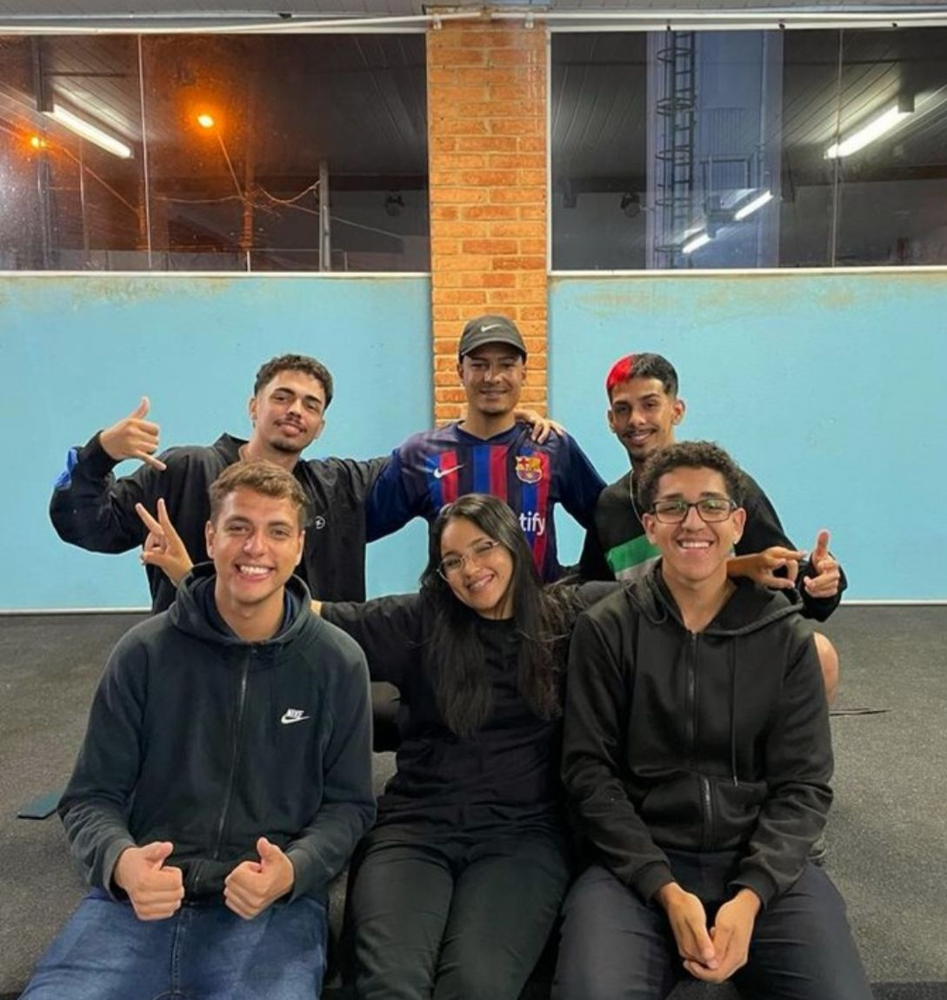

Projetos Significativos
Projeto Salve, projeto realizado no meu TCC do curso Técnico de Informática para Internet na ETEC. A ideia do projeto era divulgar e facilitar o acesso de comunidades e pessoas carentes a projetos sociais, cursos gratuitos, campanhas, eventos e muito mais.
Projeto LifeTime, Projeto LifeTime, desenvolvido na faculdade Facens, com o objetivo de priorizar o autocuidado no ambiente de trabalho. O software monitorava o desempenho do profissional e emitia notificações para lembrar de descansar a visão, corrigir a postura, fazer uma pausa para alimentação ou se hidratar.
